Microdramas · AI love stories Live on Instagram + TikTok
@microdramas.ai
Tiny love stories, big 90s drama 🎬 New part every week. An official Picsart channel, made with Picsart AI.
Serialized AI microdramas shot like a 1990s film: one scene, one twist, 30 to 50 seconds, a new part at a time. Three series so far, each with its own cast.
3series
5parts live
5parts scheduled
457views
34likes
26saves
7IG followers (day 2)
SPEAK NOW
Series 1 · romance · 8 parts, complete · 4 live, 4 scheduled through Oct 15 · Instagram numbers under each part
At a 1990s Manhattan church wedding the bride objects to her own marriage, and every guest has a secret about why. One rainy afternoon and the morning after, told in eight parts: hidden letters, a husband nobody mentioned, a sister nobody knew about, and a ring bought forty years ago.
Part 1 · 28 s
Everyone looked at the wrong woman.
A 1990s Manhattan church wedding. The bride objects to her own marriage, a soaked stranger walks in, and the groom's mother says one word: "Finally."
Live on IG + TikTok · Oct 13, 18:50
154 views9 likes7 saves2 shares0 comments open
Part 2 · The Letters · 26 s
Twelve letters. Not one arrived.
Luca wrote every month for a year. Claire never got a single letter. Her bridesmaid goes pale.
Live on IG + TikTok · Oct 13, 21:00
132 views10 likes7 saves2 shares0 comments open
Part 3 · Second Time · 28 s
Second time's the charm… if she says yes.
The letters were hidden by the bridesmaid who loves the groom. Claire leaves with Luca; Julian walks into the rain toward Vivienne.
Live on IG + TikTok · Oct 14, 12:00
155 views9 likes6 saves4 shares0 comments open
Part 4 · Tomorrow · 29 s
She said ask me tomorrow. She didn't say what he'd find.
A thirteenth letter, hidden a year ago. Julian kneels on Vivienne's stoop. Across the street a man says: "You're still my wife."
Live on IG + TikTok · Oct 14, 18:00
16 views6 likes6 saves0 shares0 comments open
Part 5 · The Husband · 28 s
He waited all night. She waited a whole year.
Mateo crosses the street. Vivienne's letter is finally read. He will let her go on one condition: "Say you never loved me."
Scheduled IG + TikTok · Oct 14, 19:00
Part 6 · The Sister · 26 s
Everyone has a secret. Hers was in the same family all along.
Vivienne can't say it. Rosalind tells Claire why she helped: "Because I'm your sister." That night, the ring disappears.
Scheduled IG + TikTok · Oct 15, 12:00
Part 7 · The Ring · 29 s
Forty years ago he bought a ring. She said no. He never asked again.
Sloane returns the ring to the priest. It was never Julian's: Harold bought it for Eleanor forty years ago. Mateo signs the papers.
Scheduled IG + TikTok · Oct 15, 18:00
Part 8 · Speak Now. Again. · 30 s
Forty years ago she said no. Today he asked again.
Season finale. Same church, a new wedding, "If anyone objects…" Eleanor stands, turns to Harold: "Ask me again."
Scheduled IG + TikTok · Oct 15, 19:00
THE LAST BITE
Series 2 · gothic romance · 2 of 8 parts made · 1 live, 1 scheduled
A young woman survives a vampire attack and starts remembering murders from eight centuries before her birth. The immortal who protects her, the friend who swears she is still human and the Regent who hunts her are all afraid of the same thing: what she remembers next. Modern city, rain, cold blue light, one drop of red per frame.
Part 1 · The Reflection · 45 s
She survived the attack. Her reflection didn't.
Elara washes pink water from her face. Her reflection keeps staring after she turns away. The phone: "Don't let them see your eyes."
Live on IG + TikTok · Oct 14, 18:30
Part 2 · Someone Else's Death · 39 s
The knock didn't come from the door.
One drop of blood and she is running through a candlelit castle as a terrified woman, eight centuries ago. The dead woman's face is hers.
Scheduled IG + TikTok · Oct 14, 19:30
FAMILY PORTRAIT
Series 3 · family drama · 2 of 8 parts made · not posted yet
A lakeside house in Connecticut, autumn 1995. A perfect family's seven-year-old keeps drawing a fifth figure outside the garden gate: a lady with yellow hair who waves at his little sister. She is the children's mother, declared drowned five years ago by the grandmother who paid her to disappear. The wife who raised them has known for three years.
Part 1 · The Drawing · 49 s
Every family portrait has someone standing just outside the frame.
Connecticut, autumn 1995. Seven-year-old Oliver keeps drawing a fifth figure outside the garden gate: a lady with yellow hair who waves at his sister.
Made, not posted yet
Part 2 · The School Gate · 40 s
Rosie knows the lady at the gate. Margot doesn't. Yet.
A blonde in a camel coat across the street at pickup. That night in the study: the wedding album, one page torn out, a photograph of Theo with another woman and a newborn.
Made, not posted yet
Dwell Live on Instagram + TikTok
@dwell.rooms
Empty room → dream room ✨ AI makeovers daily. An official Picsart channel, made with Picsart AI.
Interiors, decoded. Two posts a day at 18:00 and 21:00: before/after match cuts, statement tours, walkthrough reveals, variation swaps, colour pairs and trend carousels. Every room is made with Picsart.
6posts live
17scheduled
938views
60likes
42saves
17shares
11IG followers (day 3)
All posts, in posting order
Instagram numbers from Zernio analytics, last synced 2026-10-14 14:31:03 UTC. Posts without numbers are scheduled or still syncing.
Before / after · 19 s
Some rooms never go out of style.
Raw plaster to a Parisian salon on one match cut: same walls, same light.
Live on IG + TikTok · Oct 12, 19:00
259 views18 likes7 saves15 shares2 comments open
Statement tour · 17 s
The best homes look collected, not decorated.
Old books, older paintings and a fire that's always lit.
Live on IG + TikTok · Oct 13, 18:00
201 views8 likes8 saves0 shares0 comments open
Trend carousel · 7 slides · swipe
5 bedroom trends we're betting on for 2027.
Limewash walls, upholstered walls, burgundy accents, sculptural lighting, canopy alcoves.
Live on IG + TikTok · Oct 13, 21:00
63 views9 likes5 saves0 shares0 comments open
Colour pairs · 21 s
Same room, 5 colour pairs. Which one would you live with?
Navy + brass, sage + travertine, bordeaux + bouclé, ivory + black marble, mocha + Calacatta.
Live on IG + TikTok · Oct 14, 13:28
196 views8 likes8 saves2 shares0 comments open
Mouldings · 23 s
The power of moulding. Same rooms, same paint, a completely different level.
Coffered ceilings, picture-frame panels, fluted pilasters, a marble mantel, Parisian boiserie.
Live on IG + TikTok · Oct 14, 14:00
203 views11 likes8 saves0 shares0 comments open
Walkthrough reveal · 19 s
Wait for the closet.
Ivory bouclé, warm brass and a walk-in that glows.
Live on IG + TikTok · Oct 14, 18:00
16 views6 likes6 saves0 shares0 comments open
Variation swap · 15 s
Same bed, 12 walls. Which one would you choose?
Oak, stone, clay, walnut: one Japandi bedroom, twelve headboard walls.
Scheduled IG + TikTok · Oct 14, 21:00
Photo-set carousel · 8 slides · swipe
Limewash, travertine and one very old olive tree.
One Mediterranean villa at golden hour, room by room.
Scheduled IG + TikTok · Oct 15, 18:00
Statement tour · 20 s
This is what quiet money looks like.
Walnut, black marble and a city that never quite sleeps.
Scheduled IG + TikTok · Oct 15, 21:00
Before / after · 19 s
Slow mornings start in the right room.
A bare bathroom becomes a warm wabi-sabi spa on the beat.
Scheduled IG + TikTok · Oct 16, 18:00
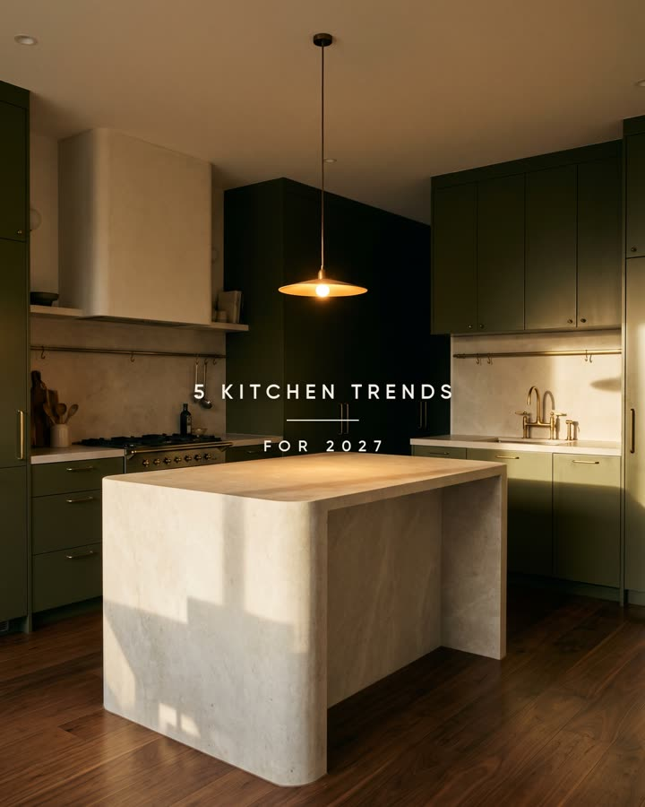
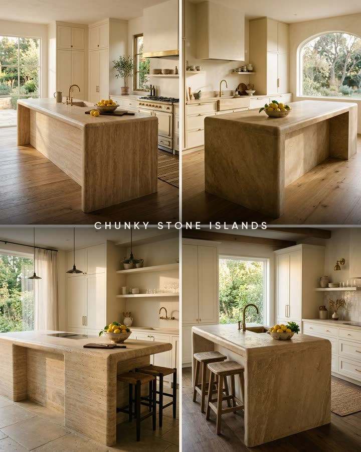
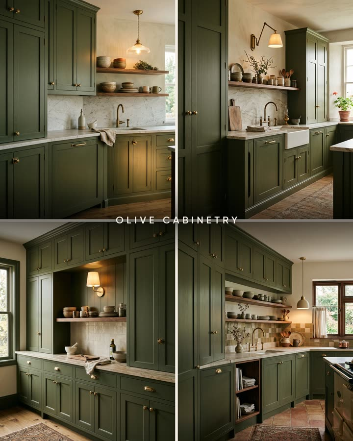

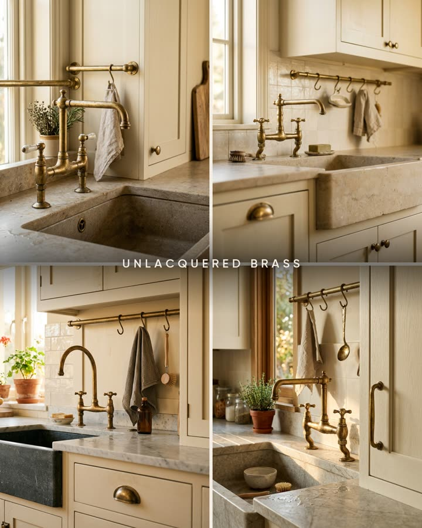
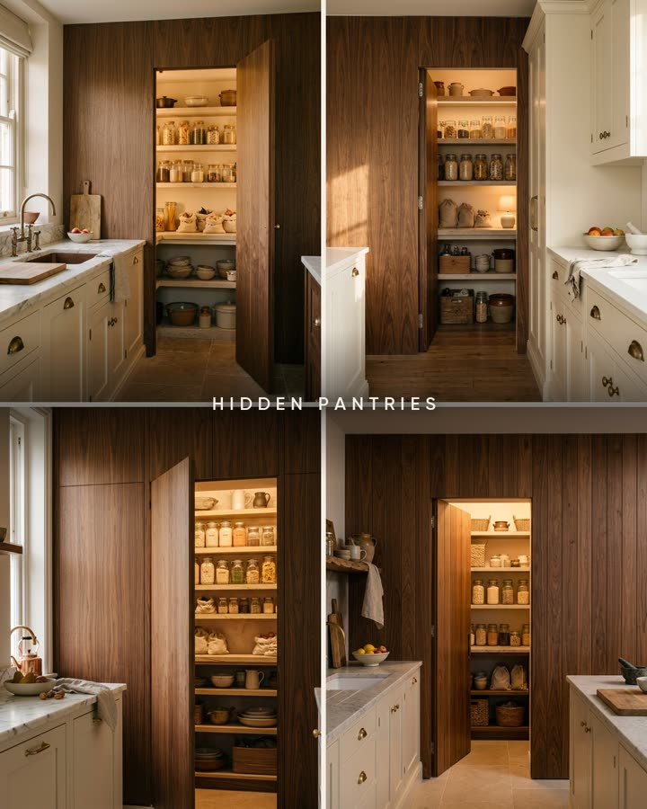
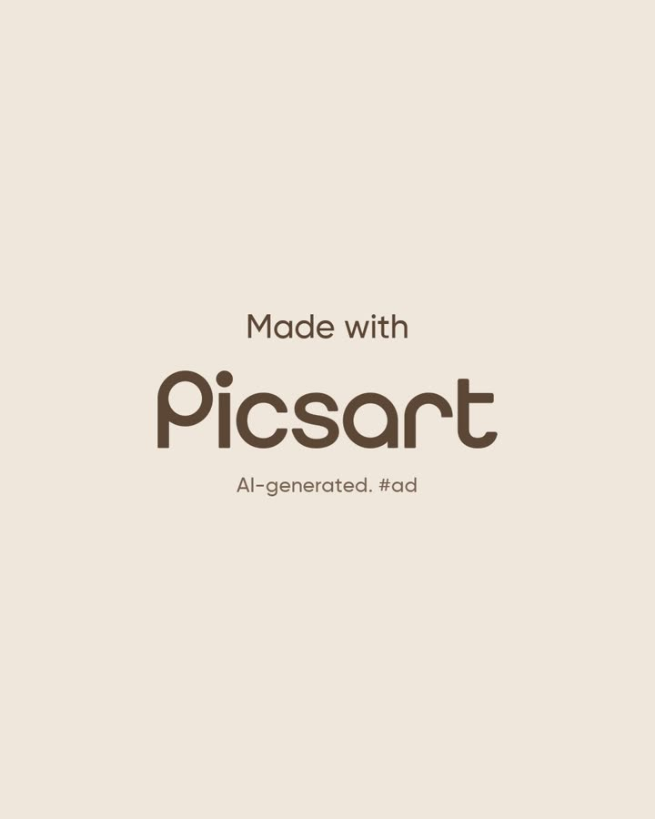


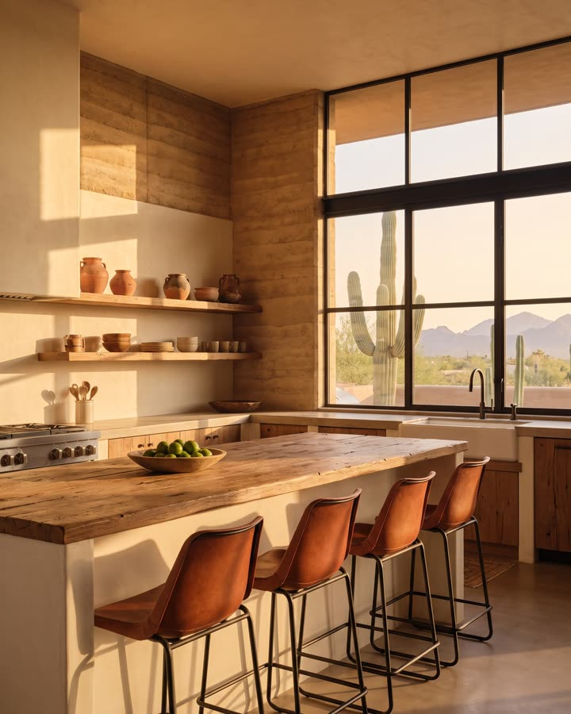
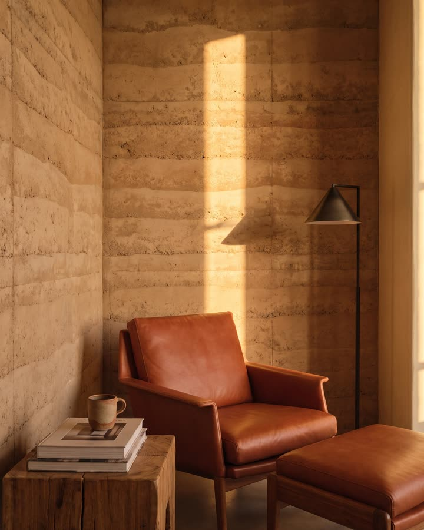

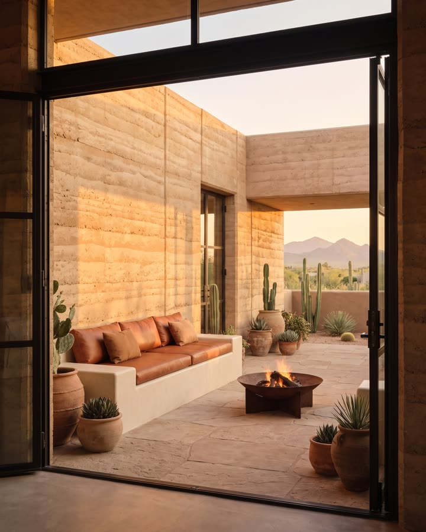


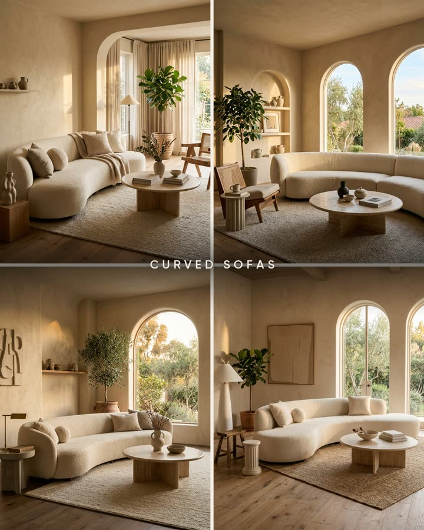
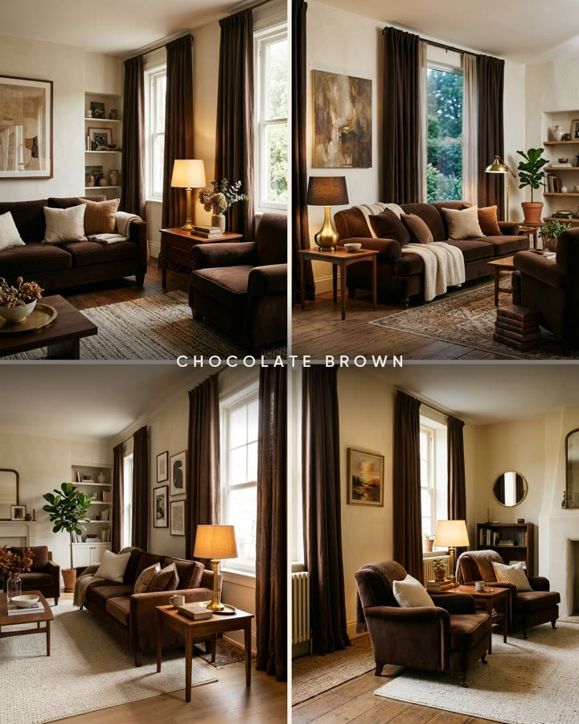
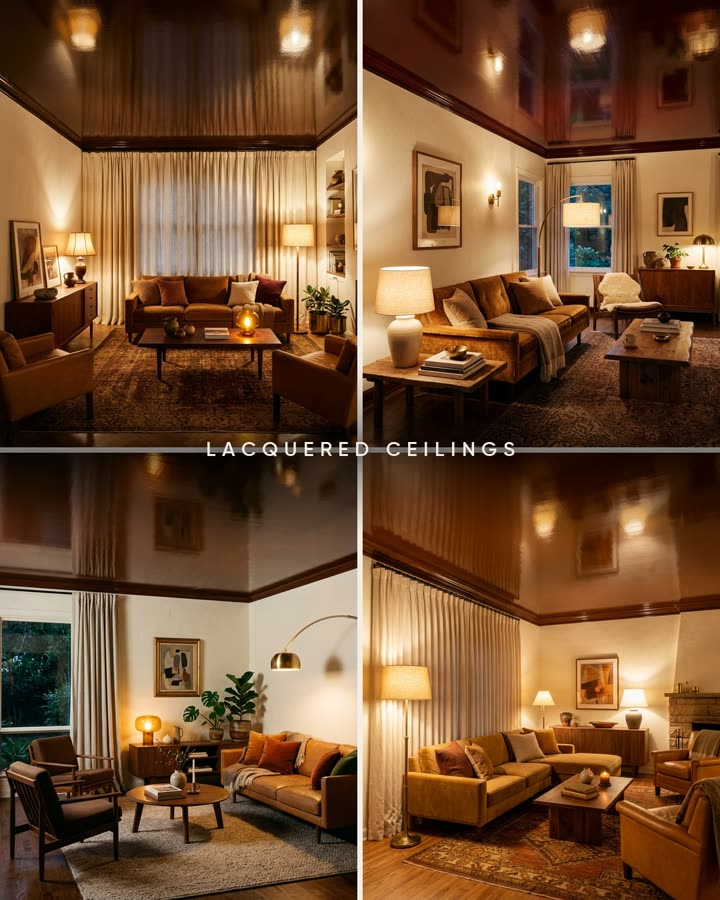


Every face in the microdramas is an original AI character and every post is labelled as AI on the platform. Every caption ends with "made with Picsart". Instagram numbers come from Zernio and refresh with each rebuild of this page; follower counts are from Oct 14. The first three pages are on our new pages.